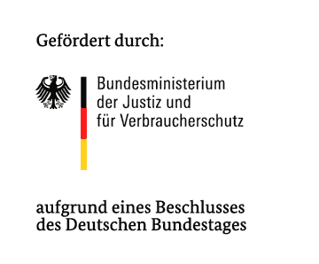

Bereitstellung von Informationen zu Datenschutzerklärungen
Dieser Chatbot hilft Ihnen Informationen zu Datenschutzerklärungen verschiedener Unternehmen zu erhalten.
Probieren Sie es aus, indem Sie auf das Ikon in der rechten unteren Ecke klicken und eine Konversation starten!
ise.tu-berlin.de/daskita
irights-lab.de/projects/daskita
